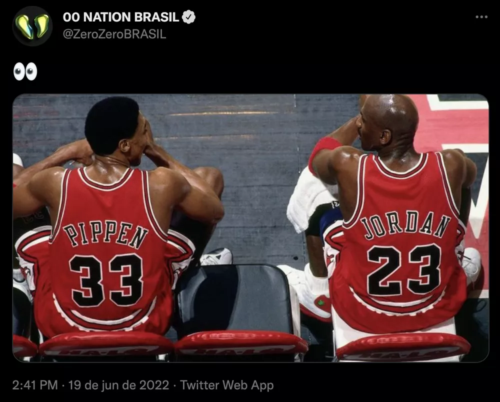

A 00 Nation e os brasileiros Marcelo "coldzera" e Epitácio "TACO" agitaram a comunidade de Counter-Strike: Global Offensive (CS:GO) neste domingo. Em meio à expectativa sobre os dois voltarem a jogar juntos, a organização postou uma foto de Michael Jordan e Scottie Pippen na época do Last Dance do Chicago Bulls, da temporada 1997/1998 da NBA (liga americana de basquete). Os pro players publicaram cada um uma parte da imagem, respectiva a uma das lendas do basquete americano.
#NovaFotoDePerfil pic.twitter.com/AbGLD9f1ys
— coldzera (@coldzera) June 19, 2022
#NovaFotoDePerfil pic.twitter.com/xNVImZW8FB
— Epitácio de Melo (@TACOCS) June 19, 2022
A 00 Nation promoveu mudanças no elenco recentemente, colocando na reserva três jogadores: Vinícius "vsm", Leonardo "leo_drk" e Mario "malbsMd". A organização também dispensou o técnico João "righi". Sobraram apenas Marcelo "coldzera" e o argentino Santino "try".
De acordo com o site Dust2 Brasil, as vagas remanescentes podem ser preenchidas por jogadores da GODSENT: Epitácio "TACO", Bruno "latto" e Eduardo "dumau". Assim, Henrique "HEN1" e Bruno "b4rtiN" seriam os únicos a restarem na GODSENT.
Após a publicação, a Imperial cutucou a 00 Nation, numa alusão de que ela havia contratado o quinteto originalmente tratado como o Last Dance brasileiro do CS:GO. Coldzera e TACO são bicampeões mundiais, e o time da Imperial conta com os outros três jogadores daquela lineup que fez história para o CS brasileiro com os dois títulos de Major em 2016 (pela Luminosity e pela SK Gaming). São eles Gabriel "FalleN", Fernando "fer" e Lincoln "fnx". O trio tem a companhia de Ricardo "boltz" e Vinicius "VINI".
Pode copiar só não faz igual 🫣
— Imperial Sportsbet.io (@imperialesports) June 19, 2022